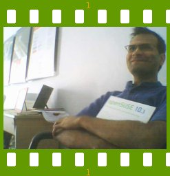

People of openSUSE: Jigish Gohil

We caught up with Jigish Gohil – a Compiz Fusion developer, openSUSE packager, and also a true openSUSE evangelist, for one more “People of openSUSE” interview.
- Nickname: CyberOrg
- Homepage: http://www.cyberorg.info
- Blog: http://newnirvana.blogspot.com/ and http://dev.compiz-fusion.org/~cyberorg/
- Favorite season: Anything but summer, they are too hot here :)
- Motto: Do good.
Please introduce yourself!
I am 34 year old living in a small town called Baroda India, I studied Clothing and Textiles at the Maharaja Sayajirao University here, which incidentally has got nothing to do with the things I am doing today. I worked at the British Council arts department, and a National Center for Performing Arts in Bombay for few years managing arts events. I am running my own SUSE centric business now.
Tell us about the background to your computer use.
Does a self assembled electronics hobby kit ping-pong game count as computer? I guess not, so I started using computer when 16MB ram, 386 with math co-processor and 540MB HDD were considered the top of the line in personal computing, late last century. DOS 6 and new Windo$ 3.1 were hot. Then came multiple floppies for 95 and 98. Till about four years back I was just an observer seeing GNU/Linux as nothing useful to me. I tried most flavors that were released but never quite liked what I saw and so windows remained my prime operating system.
Kanotix which is based on Knoppix live CD was the first distro I started to use personally more and more, while I worked professionally on Red hat and fedora. SUSE Linux 9 was the first SUSE that I tried, I liked the look of it, but did not stick with it for long.
Two years back I signed up with Novell as a training and channel partner thus got introduced to the best server platform: SLE. I became a CNI last year and am teaching NCLP course and also implement solutions based on SLE servers for various corporate clients.
When and why did you start using openSUSE/SUSE Linux?
I used hybrid of SLES9 and NLD as my regular desktop till SUSE Linux 10.1 came out, briefly using 9.3 professional here and there. I started using 10.1 since early alphas.
When did you join the openSUSE community and what made you do that?
Since it’s announcement. See above.
In what way do you participate in the openSUSE project?
Packaging Compiz Fusion, working on KIWI-LTSP, JPR is kind enough to forward some compiz bugs to me from Novell bugzilla. Maintaining a couple of wiki pages, openSUSE package thread on Compiz Fusion forum. Also running a Vibrant GNU/Linux User Group, promoting openSUSE through various activities such as workshops, demos, participating in trade shows, distributing copies of openSUSE and providing free installation facilities at my office.
What especially motivates you to participate in the openSUSE project?
I am really enjoying everything I do (having a lot of fun) and it’s enterprise cousin (SLE) pay all my bills too :)
What do you think was your most important contribution to the openSUSE project/community or what is the contribution that you’re most proud of?
I do not consider my contributions amount to much, I am still proud to have got LTSP5 working on openSUSE with the help of Magnus, Schaefi, Snorp and SLEducator. Diskless thin-client computing is the only affordable solution for many third world countries, this will keep openSUSE relevant in that segment. I also like that openSUSE always has the latest and the greatest from the Compiz Fusion eye-candy world.
When do you usually spend time on the openSUSE project?
All the time.
Three words to describe openSUSE? Or make up a proper slogan!
A touch of German engineering.
What do you think is missing or underrated in the distribution or the project?
Whatever that was missing, openSUSE Build Service and packman has filled in those gaps. Importance of OBS for the entire GNU/Linux community including all the other major distros and possibilities KIWI offers to users is very underrated.
What do you think the future holds for the openSUSE project?
Geekoes would be everywhere.
A person asks you why he/she should choose openSUSE instead of other distribution/OS. What would be your arguments to convince him/her to pick up openSUSE?
Install openSUSE on another partition and use it along with your current OS, no one has needed any convincing so far after they run it for a month.
Which members of the openSUSE community have you met in person?
Most of the Novell staff from Bombay office, and all the people who were at the partner development academy at Singapore last year. No one from the people I know over IRC.
How many icons are currently on your desktop?
Keeps changing, from 3 – 15, mostly firefox downloads, and compiz screen captures. I prefer Alt+F2 for launching apps.
What is the application you can’t live without? And why?
Any music player.
Which application or feature should be invented as soon as possible?
Any computer, no matter what hardware specifications, plugged onto the internet should turn into a part of a giant supercomputer.
Which is your preferred text editor? And why?
VI, it’s perfect for my needs.
Which famous person would you want to join the openSUSE community?
All of them.
Which computer related skills would you like to have?
Any programming skills.
The Internet crashes for a whole week. How would you feel, what would you do?
Happens all the time here :) . Go away for a week enjoying all the other good things in life.
Which is your favorite movie scene?
There are many, but at this moment the one I remember is Men in Black, the zoom out scene, brings everything in proper perspective.
Star Trek or Star Wars?
Star Trek, the one with Spock in it.
What is your favorite food and drink?
Different things at different time.
Favorite game or console (in your childhood and nowadays)?
Prince of Persia 1, DID’s Total Air War and also enjoyed Tomb Raider series, haven’t played any games for a long time now.
Which city would you like to visit?
I prefer quite places. May be Rome if the choice has to be a city.
What is your preferred way to spend your vacation?
At the beach :-)
Someone gives you $1.000.000. What would you do with the money?
Open a research center where people would work on making everyone’s life better and an art center where artists from all over the world can come and work on whatever that interest them. Both the places would be by cleanest piece of beach that budget allows. India is not very expensive.
If traveling through time was possible, when would we be most likely to meet you?
Hope it is time and space both. I’d keep traveling all the time, it would difficult to find me in one time, now is the best time to meet me.
There’s a thunderstorm outside. Do you turn off your computer?
We have power failures long before thunderstorms start happening, so most of the time we do not have much choice in the matter. If by some fluke power doesn’t get cut, no.
Have your ever missed an appointment because you forgot about it while sitting at your computer?
Nope.
Show us a picture of something, you have always wanted to share!
I’ll take this opportunity to make my son famous, say hello to Amyatam :)
http://farm3.static.flickr.com/2031/1917308460_c78d52ac54_o.jpg
{kind=link}
You couldn’t live without…
Air and one meal a day.
Which question was the hardest to answer?
The first introduction one.
What other question would you like to answer? And what would you answer?
Q. Some words for new users or those thinking about being part of the openSUSE community. A. Stick with the distro for long enough to know it better, help where you can, have patience, have a lot of fun while you explore. In return you get interviewed and a box shipped for free.